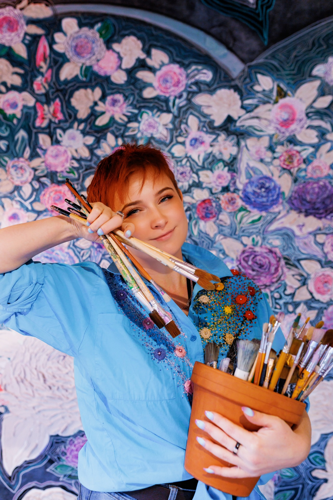

Jak to się zaczęło?
Moja artystyczna podróż zaczęła się w cichym, ciepłym domu babci. Jako mała dziewczynka, zafascynowana obrazkami leżącymi na stoliku, sięgnęłam po kartkę i spróbowałam przelać ten zachwyt na papier. Gdy babcia zobaczyła mój rysunek, w jej oczach pojawił się błysk. To była ta jedna, wyjątkowa chwila – spojrzała na mnie i z pełną przekonania czułością przepowiedziała, że zostanę malarką.
I miała rację. Głód tworzenia, pasję i żyłkę do eksperymentowania w najróżniejszych dziedzinach sztuki odziedziczyłam po wujku. To dzięki temu połączeniu dziś z taką samą radością sięgam po pędzel, igłę czy stare drewno, ciągle odkrywając coś nowego.
Zapraszam Cię do obejrzenia filmiku. Usiądź z nami i posłuchaj, jak razem z babcią wracamy do momentu, w którym to wszystko się narodziło.